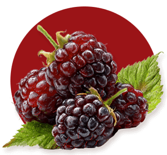

Land and season shape everything that follows
At Foragers, mead does not begin in a tank or a barrel. It begins in blossom, in soil, in weather, and in time.
The Landscape
Rooted in the seasons of the Sunshine Coast
Just inland from the Salish Sea, our estate sits among evergreen forest and the shifting coastal light of the Sunshine Coast. Here, the mild coastal climate, patient soils and careful stewardship shape the orchard and the hives alike.
The orchard was planted with intention, selecting heritage apple varieties chosen for flavour, resilience and character.
At Foragers we work within the rhythm of the seasons, not against it.
Spring blossoms bring delicate floral notes to our honey. Summer deepens fruit and nectar. Autumn delivers crisp acidity and quiet spice.
No two years are identical. We believe that is something to honour, not correct.
Just inland from the Salish Sea, our estate sits among evergreen forest and the shifting coastal light of the Sunshine Coast. Here, the mild coastal climate, patient soils and careful stewardship shape the orchard and the hives alike.
The orchard was planted with intention, selecting heritage apple varieties chosen for flavour, resilience and character.
At Foragers we work within the rhythm of the seasons, not against it.
Spring blossoms bring delicate floral notes to our honey. Summer deepens fruit and nectar. Autumn delivers crisp acidity and quiet spice.
No two years are identical. We believe that is something to honour, not correct.
The Hive
Honey as foundation, not merely ingredient
Across the property, our hives gather nectar from apple blossom, blackberry bloom and mountain wildflower. The result is Millefiori honey. Raw, unpasteurized and expressive of the moment in which it was gathered.
Honey is not simply an ingredient here. It is the foundation.
Its floral nuance, weight and complexity guide our fermentations. It informs our kitchen. It shapes our sense of season.
With every harvest, we listen first and craft second.
The result is not something engineered to remain identical year after year, but something living. Shaped by weather, bloom, harvest and the quiet patience of fermentation.

Expression Over Replication
Something living, shaped by weather, bloom and time
In a world that values uniformity, we choose expression.
Small-batch fermentations allow honey, fruit and time to speak without excess manipulation.
Seasonal menus shift with the harvest, responding to what is freshest and most compelling.
When you experience Foragers mead, you are tasting the moments that shaped it.
From Field to Glass and Table
An integrated estate, from nature to plate
Foragers was created as an integrated agricultural and hospitality estate.
Our meads reflect the honey and fruit grown here. Our kitchen works closely with our head meadmaker, often incorporating estate honey and mead directly into sauces, reductions, vinaigrettes and desserts.
What you taste in your glass may echo on your plate. What you find on your plate may carry the brightness of orchard fruit or the warmth of wildflower bloom.
It is not about novelty. It is about cohesion.

Discover the meads born from this land
Every pour begins from the orchard and the hive. Explore what we craft from this place.